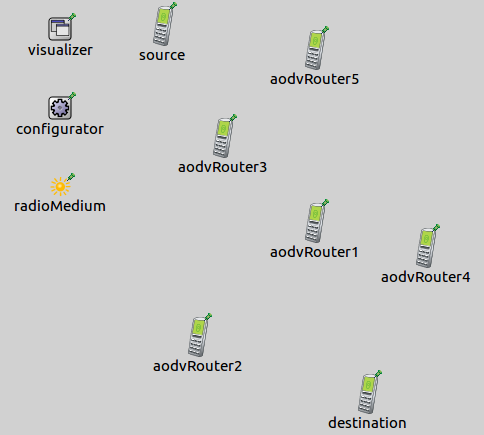

In complex, non-trivial or in ad hoc networks, without detailed routing informations it is impossible to determine the path of a packet between remote hosts. Visualizing network routes is advantageous, because we can trace a packet's route from the source to the destination. It is especially helpful if there is a dynamic routing protocol in the network. If there is a change in the routes e.g because a router go wrong, we get information immediately about the changing routes.
The example consists of 4 simulation models, each demonstrating different features of network route visualization.
The NetworkRouteVisualizer keeps track of active network routes. A network route between two nodes is considered active if a packet reaches the destination's network layer. By default routes are not displayed, we can enable their vsisualization by switching the displayRoutes parameter to true.
The links are represented visually by solid arrows. The arrow's starting point is the source node and its endpoint is the destination node. The line goes through those intermediate devices which are the part of the third layer path.
The visualizer has filtering parameters, like nodeFilter, interfaceFilter and packetFilter. Using these we can specify which network routes are shown. By default all nodes, all interfaces and all packets are considered for displaying network routes. It is possible to use logical expressions as the filter's parameter, e.g packetFilter = "ping* or tcp*" shows the ping and the tcp network routes.
This simulation demonstrates how to enable the default look of the visualization of network routes.
The network for this configuration contains two Standardhosts, an IPv4NetworkConfigurator module which enables the hosts to communicate and a NetworkRouteVisualizer module which shows the network routes.
The configuration is really simple. The source pings the destination and an additional line enables the visualizer with the displayRoutes parameter:
The ping message activates a network route between the devices. The further packets, like ARP messages go up to the data link layer only, so they don't activate a network route. After 1 second in real time, the network route fades out.
The simulation demonstrates the visualization of static routes in a non-trivial network. We also show how the packetFilter parameter works. Here is the network for this configuration:

The topology consists of five routers, four switches and four StandardHosts. There are two source hosts and two destination hosts. Similarily to the previous configuration, the sources ping the destinations. We enable network routes with the displayRoutes parameter, but only when the message type is ping. We adjust the fadeOutMode and the fadeOutTime parameters, so the data link doesn't fade out completely before the next ping message arrives.
The following video shows what happens, when we start the simulation:
Only the network routes of the ping messages are displayed because of the packetFilter parameter. Each arrow represents a different route. The arrows fade out gradually in simulation time, but not completely, because the fadeOutTime is greater than the sending interval of ping messages.
In this simulation we show how the network route establishes and how it changes between moving nodes. Here is the network that we use for this configuration:

The network contains a source, a destination and five more AODVRouters. All nodes move randomly between borders. The source pings the destination. In additional there is an IPv4NetworkConfigurator module an IntegratedVisualizer module and an Ieee80211ScalarRadioMedium module. These modules are required for the appropriate network operation.
The following video depicts what happens, when the simulation is run:
When the ping reaches the destination's network layer, the visualizer draws the packet's network route. The nodes move randomly and their communication range is small, so the route will change between the source and the destination sooner or later. The visualizer displays the network route after the packet arrives to the destination, so we get information about the route changes.
This configuration demonstartes that, how the visualizer reacts to the routing changes in a complex network. Here is the network for this configuration:
IMG
The network contains four RIP routers. Later it turns out, why the RIP is neccessary. They are placed and connected so as to create redundant paths. There is a wired and a wireless source-destination pair. Similarily to the previous configuration, the wiredSource pings the wiredDestination and the wirelessSource pings the wirelessDestination. We assign IP addresses manually by creating an xml configuaration file. Here is the network configuration for this topology: CONFIGURATOR We create a lifecycle for this configuration. By configuring lifecycleController we shut down and start the routers at a given time. TODO: For this reason, we use RIP, so the path is changed between the source and the destination.
Ehhez kell bekapcsolnunk a RIP-et, hogy a kikapcsolas utan az addig hasznalatlan router vegye at a kikapcsolt router szerepet. Itt van a halozat:
Ha elinditjuk a szimulaciot, akkor a kovetkezoket latjuk: Eloszor minden packet a router1 fele megy. 5 masodperc utan leall a router1, a packetek a router3 fele mennek. A 10. masodpercben visszakapcsol a router1, de nem befolyasolja a packet-ek utvonalat. A 15. masodpercben lekapcsol a router3, ezert az utvonalak ujbol a router 1-en fognak keresztul menni. A 20. masodpercben visszakapcsol a router3, de ez nem befolyasolja a packetek utvonalat.
This example only demonstrated the key features of network route visualization. For more information, refer to the NetworkRouteVisualizer NED documentation.